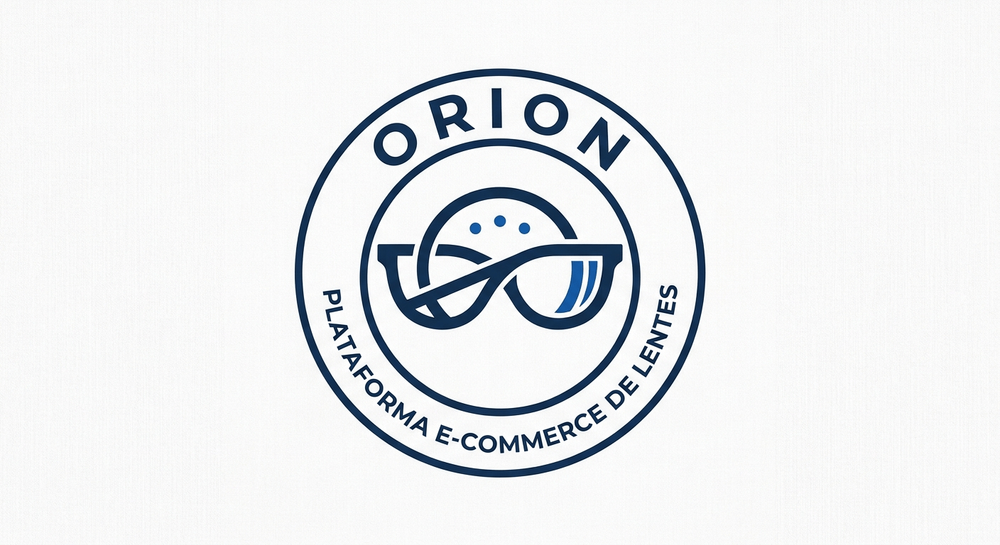

Portafolio · Aplicaciones Web
Matrícula: 25311014 · Grupo: TIDSM 4-1
Estudiante de Desarrollo de Software Multiplataforma enfocado en la construcción de aplicaciones web dinámicas y escalables.
Sobre mí
Soy alumno de la carrera de Desarrollo de Software Multiplataforma (DSM 4-1). Mi interés por el desarrollo web nació de la necesidad de entender cómo se conectan las interfaces de usuario con las arquitecturas del servidor en tiempo real.
Stack
Proyecto Integrador
Plataforma e-commerce dedicada a la exhibición y venta de lentes de sol y oftálmicos. La vitrina digital permite a los visitantes explorar un catálogo interactivo de armazones, mientras que los usuarios registrados e inicios de sesión activos pueden gestionar su carrito de compras.

Evidencia por unidad
Cada enlace lleva a la versión pública que entregué al cerrar esa Unidad, sobre el mismo proyecto.
Unidad 1
Portafolio estático (HTML + Tailwind)
Unidad 2
Portafolio estático (HTML + Tailwind)
Unidad 3
CRUD dinámico con login y sesiones
Unidad 4
Proyecto integrador final
Contacto